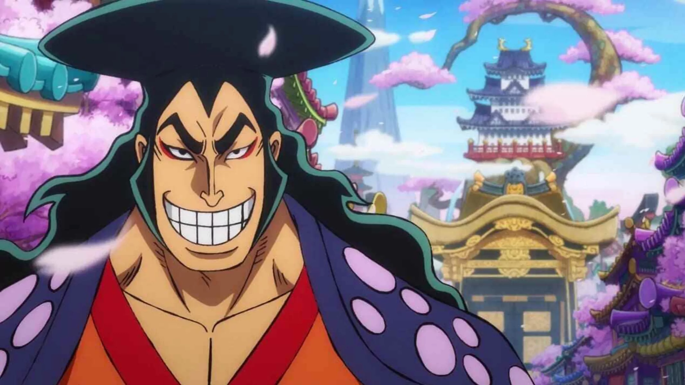

About Oden
Kozuki Oden is the Daimyo of Kuri. He is the baddest guy of the Wano Kingdom and haven't lost a single fight to anyone in his hometown.
Daimyo walking down the streets of Wano
Oden's Characteristics
- He's got beautiful hair
- He's the strongest in the kingdom of Wano
- His dream is to go out of Wano and explore the world
Oden's Friends
Oden gathered his 9 best friends on his quest to explore Wano. At first the so called Ayakaza 9 followed him out of pure admiration but later on they became Oden's retainers and his best friends. Click on the links below to read more about them.